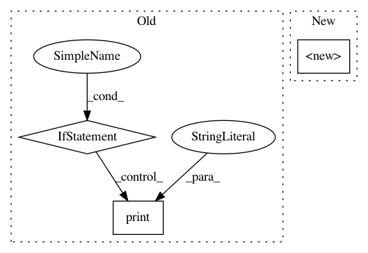

cf1f601ab89d89ec72ba009140470d4689553db1,caserec/recommenders/rating_prediction/user_attribute_knn.py,UserAttributeKNN,__init__,#UserAttributeKNN#Any#Any#Any#Any#Any#Any#Any#Any#,46
Before Change
UserKNN.__init__(self, train_file, test_file, prediction_file=prediction_file, neighbors=neighbors,
similarity_metric=similarity_metric, space_type=space_type)
if metadata_file is None and similarity_matrix_file is None:
print("This algorithm needs a similarity matrix or a metadata file!")
sys.exit(0)
if metadata_file is not None:
self.metadata = ReadFile(metadata_file, space_type).read_metadata(self.users)
self.matrix = self.metadata["matrix"]
self.similarity_matrix_file = similarity_matrix_file
After Change
>> UserAttributeKNN(train, test, similarity_file=sim_matrix, as_similar_first=True).compute()
>> UserAttributeKNN(train, test, metadata_file=metadata, as_similar_first=True).compute()
:param train_file: File which contains the train set. This file needs to have at least 3 columns
(user item feedback_value).
:type train_file: str
:param test_file: File which contains the test set. This file needs to have at least 3 columns
(user item feedback_value).
:type test_file: str, default None
:param output_file: File with dir to write the final predictions
In pattern: SUPERPATTERN
Frequency: 3
Non-data size: 3
Instances
Project Name: caserec/CaseRecommender
Commit Name: cf1f601ab89d89ec72ba009140470d4689553db1
Time: 2018-02-16
Author: fortes.arthur@gmail.com
File Name: caserec/recommenders/rating_prediction/user_attribute_knn.py
Class Name: UserAttributeKNN
Method Name: __init__
Project Name: neuropsychology/NeuroKit.py
Commit Name: cec653d36c15c9ffc078df0201d30c3ac3a5115b
Time: 2017-05-18
Author: dom.mak19@gmail.com
File Name: neurokit/bio/bio_ecg.py
Class Name:
Method Name: ecg_process
Project Name: philipperemy/keras-tcn
Commit Name: 0cfe82c6beb9a28a5ff7da81b86fa0e93c388f14
Time: 2019-11-20
Author: premy@cogent.co.jp
File Name: tasks/save_reload_model.py
Class Name:
Method Name: